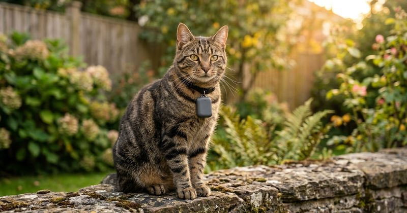
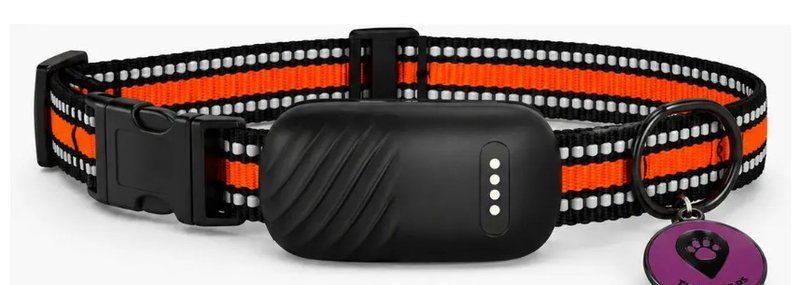
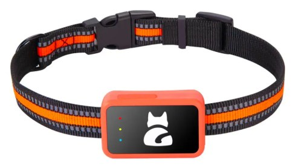
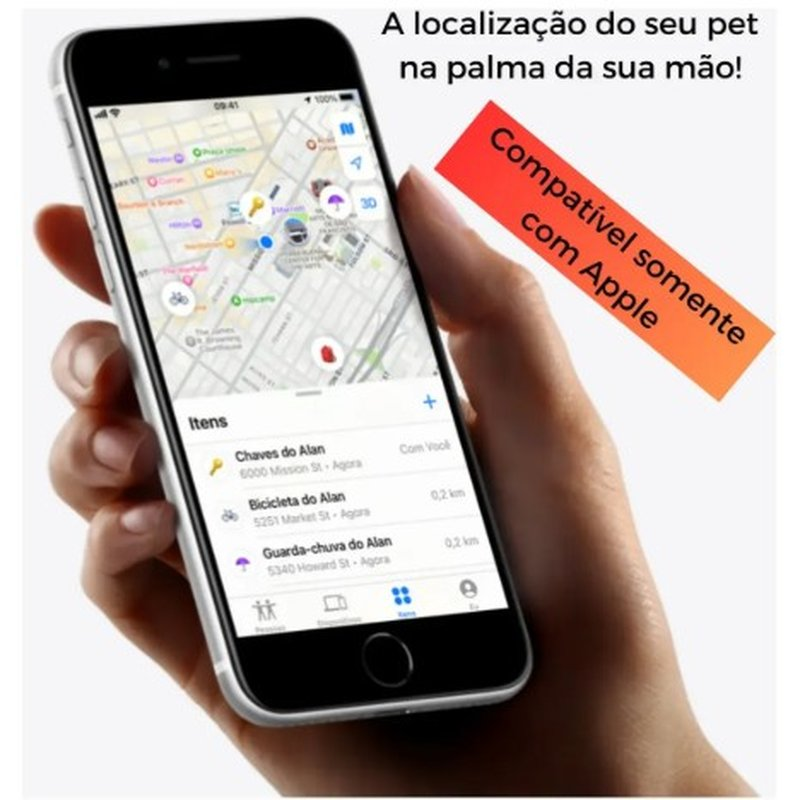
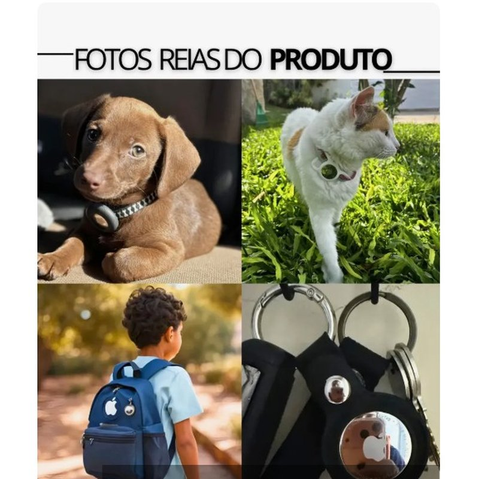
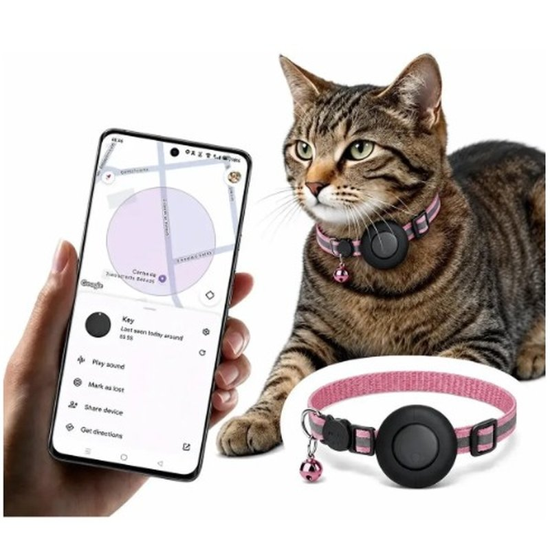
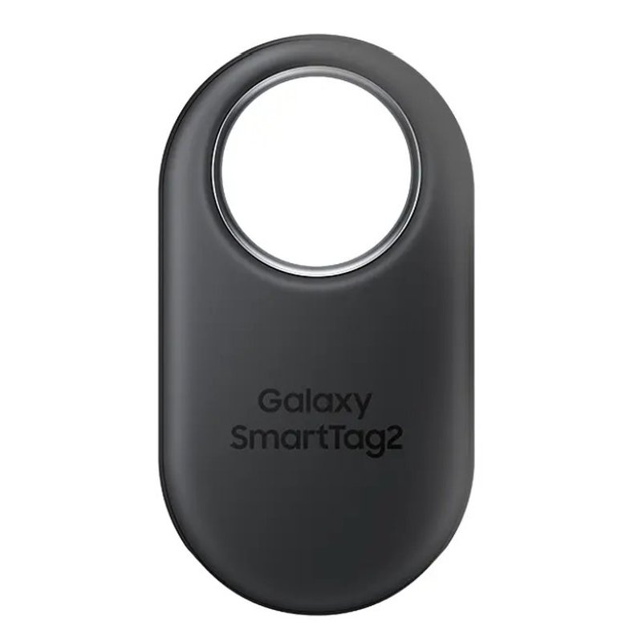

Melhor Coleira GPS para Gato em 2026: 6 Coleiras e Rastreadores Comparados

A melhor coleira GPS para gato que sai de casa, entre os 6 modelos que comparamos, é a The Pet GPS 4G: tem GPS e chip 4G interno com 12 meses de rastreamento inclusos, bateria de até 7 dias e app para Android e iPhone, por R$ 718 no Mercado Livre em 12/11/2026. Com orçamento menor, o ANXK G68 é o rastreador 4G mais leve (27 g, a partir de R$ 301,99), mas exige chip à parte. Para gato de apartamento, uma tag Bluetooth de R$ 130 a R$ 160 resolve: a coleira com tag Apple para iPhone ou a coleira com tag Google para Android.
Quer ver o preço da mais indicada? The Pet GPS 4G, com 1 ano de rastreamento incluso.Link de afiliado — sem custo extra para você.
Ver preço no Mercado Livre →Escolha rápida
- Gato que sai de casa ou some à noite: The Pet GPS 4G (R$ 718, chip e 1 ano de dados inclusos)
- GPS 4G mais leve e barato: ANXK G68 (27 g, a partir de R$ 301,99, mais o chip)
- Tem iPhone e quer o kit pronto: coleira com tag Apple (R$ 130, tag de 9 g)
- Tem iPhone e quer a tag original: Apple AirTag (R$ 417 o kit com 2)
- Tem Android de qualquer marca: coleira com tag Google (R$ 159,99)
- Tem celular Samsung Galaxy: Galaxy SmartTag2 (R$ 145,50, até 500 dias de bateria)
Comparativo: as 6 Coleiras GPS e Rastreadores para Gato
A tabela reúne os 6 modelos lado a lado: dois rastreadores GPS 4G e quatro opções de coleira com rastreador Bluetooth para gatos. Preços consultados no Mercado Livre em 12/11/2026, exceto o ANXK G68 (24/10/2026). Os valores mudam com frequência: confira no link antes de comprar.
| Modelo | Tipo | Preço | Peso | Bateria | Mensalidade | Celular | Nota no ML | |
|---|---|---|---|---|---|---|---|---|
| The Pet GPS 4G | GPS 4G | R$ 718 | 42 g (módulo) | Até 7 dias | 12 meses inclusos; depois, opcional | Android e iPhone | 4,5 (51 avaliações) | Ver preço |
| ANXK G68 4G | GPS 4G | R$ 301,99 | 27 g | Até 4 dias | Chip com plano de dados, à parte | App do fabricante | 5,0 (1 avaliação) | Ver preço |
| Coleira + tag Apple (Ideashop) | Tag Bluetooth | R$ 130 | 9 g (tag) | Pilha CR2032 | Sem mensalidade | Só iPhone e iPad | 4,3 (169 avaliações) | Ver preço |
| Apple AirTag (2 un.) | Tag Bluetooth | R$ 417 | 11 g | Pilha CR2032 | Sem mensalidade | Só iPhone e iPad | 4,9 (310 avaliações) | Ver preço |
| Coleira + tag Google (Mestre) | Tag Bluetooth | R$ 159,99 | Não informado* | Pilha CR2032 | Sem mensalidade | Android 9 ou superior | 3,9 (15 avaliações) | Ver preço |
| Galaxy SmartTag2 | Tag Bluetooth | R$ 145,50 | Cerca de 14 g | Até 500 dias | Sem mensalidade | Só Samsung Galaxy | 4,8 (11.539 avaliações) | Ver preço |
GPS 4G ou Tag Bluetooth: Qual Tipo Escolher para o Seu Gato
Essa é a decisão mais importante, antes da marca. Muitos anúncios de coleira GPS para gatos vendem, na verdade, uma tag Bluetooth, que não tem GPS.
| Rastreador GPS 4G | Tag Bluetooth | |
|---|---|---|
| Como localiza | GPS por satélite, enviado pela rede 4G | Celulares de terceiros que passam perto (rede Apple, Google ou Samsung) |
| Distância | Qualquer uma, onde houver sinal 4G | Depende de haver gente com celular perto do gato |
| Tempo real | Sim | Não; mostra a última vez que foi detectada |
| Custo | R$ 300 a R$ 800, mais dados móveis | R$ 130 a R$ 210 por tag, sem mensalidade |
| Peso | 27 a 42 g | 9 a 14 g |
| Bateria | 4 a 7 dias, recarregável | 1 ano ou mais, pilha CR2032 |
| Melhor para | Gato que sai de casa, área rural, condomínio grande | Gato de apartamento ou casa fechada, fugas curtas |
Se a dúvida é sobre chip e plano de dados, o comparativo detalhado está em coleira GPS Bluetooth x chip de operadora. Se a prioridade é não pagar nada por mês, veja também a coleira GPS sem mensalidade.
As 6 Melhores Coleiras GPS para Gato em 2026
Os dados de cada modelo vêm do anúncio no Mercado Livre e das avaliações publicadas por compradores. Não testamos os aparelhos; veja como escolhemos.
The Pet GPS: Coleira GPS 4G com 1 ano de rastreamento incluso

É o único da lista que resolve o problema do chip: o módulo já vem com chip 4G interno habilitado por 12 meses, sem mensalidade no primeiro ano. A posição aparece no app a qualquer distância, desde que haja sinal 4G (o anúncio cita as redes Vivo e Claro). Também é o mais caro, e o módulo de 42 g pede um gato adulto: o vendedor recomenda a partir de 2 kg, com a fita P (pescoço de 20 a 30 cm).
| Preço | R$ 718 em oferta relâmpago (preço cheio R$ 799,90) ou 10x de R$ 71,80 sem juros, consultado em 12/11/2026 |
|---|---|
| Rastreamento | GPS + 4G com chip interno. Funciona sem Bluetooth e sem celular por perto |
| Mensalidade | 12 meses inclusos. Depois, a renovação é opcional e contratada no app; o anúncio não informa o valor |
| Peso e medidas | 42 g, 6 x 3,3 x 1,9 cm (descrição do anúncio; a ficha técnica indica 40 g) |
| Bateria | Até 7 dias em uso normal, menos no modo de busca intensa. Carregador magnético incluso |
| App | The Pet GPS (Android e iOS): tempo real, cerca virtual com alerta de fuga, alarme sonoro, compartilhamento com a família, vários pets na mesma conta |
| Coleira | Fita refletiva com LED, tamanhos P (20 a 30 cm, gatos), M e G. Tag QR Code com o contato do tutor |
| Água | Resistente a chuva, lama e banho de mangueira |
| Anatel | Homologação nº 027552207968 |
| Garantia | 30 dias do vendedor, mais 30 dias de devolução grátis do Mercado Livre |
- Chip 4G e 1 ano de rastreamento inclusos: não precisa comprar chip nem plano
- Localiza a qualquer distância, sem depender de celulares por perto
- Até 7 dias de bateria, a maior entre os rastreadores 4G desta lista
- Homologado pela Anatel; empresa brasileira com suporte em português
- Nota 4,5 com 51 avaliações, várias com fotos de gatos usando a coleira
- O mais caro da lista
- 42 g pesa para gato pequeno ou filhote: o vendedor indica a partir de 2 kg
- O valor da renovação depois de 12 meses não aparece no anúncio
- Parte dos compradores reclama da precisão da localização, segundo o resumo de opiniões do Mercado Livre
- O anúncio não diz se o fecho é de engate de segurança (breakaway)
🐾 The Pet GPS 4G com 1 ano de rastreamento incluso: veja o preço de hoje.
Ver preço no Mercado LivreLink de afiliado: podemos receber uma comissão por compras feitas através deste link, sem custo adicional para você.
Rastreador GPS ANXK G68 4G

Com 27 g, é o rastreador 4G mais leve que encontramos no Mercado Livre, e custa menos da metade do The Pet GPS. Em troca, você precisa comprar um chip com plano de dados à parte, e o produto ainda tem só uma avaliação publicada.
| Preço | A partir de R$ 301,99 (14 ofertas novas), consultado em 24/10/2026 |
|---|---|
| Rastreamento | 4G CAT-1 com 5 modos: GPS, AGPS, BeiDou, Wi-Fi e torres de celular. Precisão de até 10 m, segundo o fabricante |
| Mensalidade | Precisa de chip com plano de dados (não incluso) |
| Peso | 27 g |
| Bateria | 850 mAh, até 96 horas (cerca de 4 dias), segundo o fabricante |
| App | Cerca virtual com alerta, histórico de rotas de 90 dias, nível de atividade. O anúncio não informa o nome do app |
| Coleira | Náilon com costura refletiva e presilha comum (não é breakaway) |
| Água | IP65: chuva e respingos, sem submersão |
- O mais leve entre os rastreadores 4G (27 g)
- Wi-Fi e torres de celular ajudam quando o gato se esconde onde o GPS falha
- Histórico de 90 dias mostra para onde o gato costuma ir à noite
- Menos da metade do preço do The Pet GPS
- Chip e plano de dados são comprados à parte
- Só 1 avaliação publicada
- Presilha comum: troque por uma coleira com engate de segurança
- Bateria de cerca de 4 dias
🐾 Rastreador GPS ANXK G68 4G (27 g): veja o preço de hoje no Mercado Livre.
Ver preço no Mercado LivreLink de afiliado: podemos receber uma comissão por compras feitas através deste link, sem custo adicional para você.
Coleira para Gato com Tag Rastreadora Compatível com Apple (Ideashop)

Para quem tem iPhone e quer resolver tudo numa compra só: vem a coleira para gato e uma tag de 9 g que entra na rede Buscar da Apple, a mesma da AirTag. Custa menos que uma AirTag sozinha e tem a melhor combinação de preço e avaliações entre os kits de coleira.
| Preço | R$ 130 (de R$ 237,90) ou 12x de R$ 12,85, consultado em 12/11/2026. Na captura, o anúncio mostrava "última unidade" |
|---|---|
| Rastreamento | Bluetooth na rede Buscar da Apple. Não é GPS |
| Compatibilidade | Só iPhone e iPad com iOS 14.5 ou superior e Bluetooth 5.2. Não funciona com Android |
| Mensalidade | Nenhuma |
| Tag | Marca Kwlboey, 9 g com pilha, 40 x 35 x 9 mm com o aro |
| Bateria | Pilha CR2032 não recarregável, já instalada |
| Coleira | Ajustável de 22 a 32,5 cm, 1 cm de largura, faixa refletiva, fecho de engate rápido |
| Vendedor | Ideashop, MercadoLíder Gold, mais de 10 mil vendas |
| Garantia | 7 dias do vendedor, mais 30 dias de devolução grátis do Mercado Livre |
- Coleira de gato e tag no mesmo kit, por R$ 130
- Tag de 9 g, o conjunto mais leve da lista
- Usa a rede Buscar da Apple, com milhões de iPhones fazendo a ponte
- Mais de 1.000 vendidos e nota 4,3 com 169 avaliações
- Não é GPS: só atualiza quando passa perto de um iPhone
- Não funciona com Android
- Garantia do vendedor de só 7 dias
- O anúncio fala em "fecho seguro", mas não confirma engate breakaway
🐾 Coleira para gato com tag compatível com o app Buscar do iPhone.
Ver preço no Mercado LivreLink de afiliado: podemos receber uma comissão por compras feitas através deste link, sem custo adicional para você.
Apple AirTag (kit com 2 unidades)

A AirTag original da Apple tem a vantagem da Busca Precisa: com iPhone compatível, o app aponta a direção e a distância até o gato quando ele está escondido perto de você. O kit com 2 unidades serve para dois gatos, ou para o gato e as chaves. A coleira com suporte é comprada à parte.
| Preço | R$ 417 pelo kit com 2 (cerca de R$ 208 cada) ou 12x de R$ 40,32, consultado em 12/11/2026 |
|---|---|
| Rastreamento | Bluetooth e banda ultralarga (UWB) na rede Buscar da Apple. Não é GPS |
| Compatibilidade | Só iPhone e iPad |
| Mensalidade | Nenhuma |
| Peso e medidas | 11 g, 31,9 mm de diâmetro, 8 mm de espessura (especificação da Apple, modelo A2937) |
| Bateria | Pilha CR2032 substituível, cerca de 1 ano segundo a Apple |
| Água | IP67 |
| Vendedor | ELETRONICOSRIBELO, MercadoLíder Platinum, mais de 1.000 vendidos neste anúncio |
| Garantia | 3 dias do vendedor, mais 30 dias de devolução grátis do Mercado Livre |
- Nota 4,9 com 310 avaliações
- Busca Precisa aponta direção e distância em iPhones compatíveis
- Kit com 2 unidades: sai mais barato por tag
- 11 g e pilha de cerca de 1 ano
- Não é GPS: depende de iPhones por perto
- Precisa de coleira com suporte para AirTag, vendida à parte
- Garantia do vendedor de só 3 dias. Peça nota fiscal
- Não funciona com Android
🐾 Kit com 2 AirTags originais: veja o preço de hoje no Mercado Livre.
Ver preço no Mercado LivreLink de afiliado: podemos receber uma comissão por compras feitas através deste link, sem custo adicional para você.
Coleira Rastreadora Pet Certificada Google (Mestre S10)

É a alternativa para quem tem Android de qualquer marca: a tag entra na rede Encontre Meu Dispositivo do Google, que funciona em celulares com Android 9 ou superior. A coleira já vem com fivela de liberação rápida, mas o produto tem só 15 avaliações e nota 3,9.
| Preço | R$ 159,99 (R$ 151,99 com cupom por seguir a loja) ou 5x de R$ 32, consultado em 12/11/2026 |
|---|---|
| Rastreamento | Bluetooth na rede Encontre Meu Dispositivo do Google. Não é GPS |
| Compatibilidade | Android 9 ou superior. Não funciona com iPhone |
| Mensalidade | Nenhuma |
| Alarme | Toca pelo app a até 150 m, via Bluetooth |
| Bateria | Pilha CR2032 inclusa |
| Coleira | Náilon, tamanho P (22 a 35 cm), fivela de liberação rápida |
| Água | Resistente a água e poeira, segundo o anúncio |
| Garantia | 1 mês do vendedor (LOJA MESTRE, MercadoLíder), mais 30 dias de devolução grátis |
- Funciona em Android de qualquer marca, não só Samsung
- Coleira e tag no mesmo kit, com fivela de liberação rápida
- Envio Full: chega rápido
- Avaliações elogiam o manual em português e a faixa refletiva
- Nota 3,9 com só 15 avaliações
- Uma avaliação negativa diz que a localização só aparecia perto do próprio celular
- Não é GPS e não funciona com iPhone
- *A ficha diz 40 g, mas esse número parece incluir a coleira e a embalagem
🐾 Coleira com tag para a rede do Google (Android): veja o preço de hoje.
Ver preço no Mercado LivreLink de afiliado: podemos receber uma comissão por compras feitas através deste link, sem custo adicional para você.
Samsung Galaxy SmartTag2

A tag mais avaliada da lista, com mais de 11 mil avaliações e bateria declarada de até 500 dias. O porém é forte: ela só funciona com celulares Samsung Galaxy, pelo app SmartThings Find. Também precisa de uma coleira com suporte.
| Preço | R$ 145,50 ou 12x de R$ 14,38, consultado em 12/11/2026 (outras ofertas a partir de R$ 129,99) |
|---|---|
| Rastreamento | Bluetooth na rede SmartThings Find da Samsung. Não é GPS |
| Compatibilidade | Só celulares e tablets Samsung Galaxy com Android 9 ou superior |
| Mensalidade | Nenhuma |
| Alcance do Bluetooth | Até 150 m |
| Bateria | Até 500 dias, segundo a Samsung |
| Água | IP67: poeira e imersão até 1 m por 30 minutos |
| Extras | Modo Perdido com contato via NFC, busca com realidade aumentada em Galaxy compatíveis |
| Anatel | Homologação nº 121252301739 |
- Nota 4,8 com mais de 11 mil avaliações e +50 mil vendidos
- Bateria de até 500 dias
- IP67, a melhor proteção contra água da lista, junto com a AirTag
- Avaliação de tutor que usa na coleira do gato que sai para passear
- Só funciona com celular Samsung Galaxy
- Não é GPS: depende de aparelhos Galaxy por perto
- Precisa de coleira com suporte, vendida à parte
- O formato oval fica mais comprido no pescoço do gato que uma tag redonda
🐾 Galaxy SmartTag2 (para quem tem celular Samsung): veja o preço de hoje.
Ver preço no Mercado LivreLink de afiliado: podemos receber uma comissão por compras feitas através deste link, sem custo adicional para você.
Como Escolhemos
Partimos das buscas por coleira GPS e rastreador para gato no Mercado Livre e descartamos anúncios sem ficha técnica, sem avaliações de compradores ou com promessas impossíveis, como "GPS sem mensalidade" em tag Bluetooth. Entre os restantes, priorizamos:
- Tecnologia honesta: o anúncio diz claramente se é GPS 4G ou tag Bluetooth e com quais celulares funciona.
- Peso: abaixo de 45 g no módulo, e de preferência bem menos.
- Avaliações: número e conteúdo, incluindo as críticas, que citamos nos contras de cada modelo.
- Vendedor: reputação no Mercado Livre, garantia e envio Full.
- Uma opção por perfil: gato que sai de casa, orçamento menor, iPhone, Android e Samsung.
Não testamos os aparelhos fisicamente. Preços, pesos e notas são os do anúncio na data indicada.
Peso e Engate de Segurança: O Que Muda do Cão para o Gato
- Peso: gatos sentem mais o peso extra no pescoço que cães de porte parecido. Entre dois rastreadores com os mesmos recursos, prefira o mais leve. Se o gato coça muito a coleira, anda abaixado ou para de pular, o conjunto pode estar pesado ou mal ajustado.
- Engate de segurança (breakaway): a coleira abre sozinha se o gato ficar preso em um galho, grade ou vão. Nenhum dos anúncios desta lista confirma o fecho breakaway com todas as letras. Para gato que sai de casa, vale prender o rastreador ou a tag a uma coleira breakaway própria.
- Ajuste: deve caber um ou dois dedos entre a coleira e o pescoço. Mais solta, o gato tira; mais justa, machuca.
- Adaptação: coloque a coleira por períodos curtos dentro de casa antes de deixar o gato sair com ela.
Por Que Gatos Somem e Como Isso Afeta o Rastreador
Gatos tratam a vizinhança como território, não só a casa, e podem se afastar bastante à noite. Relatos compilados pela Polipet falam em até 3 km, e o cio é um gatilho comum de fuga. Diferente do cão, o gato se esconde em vãos estreitos (embaixo de carros, dentro de dutos, atrás de muros), onde o GPS por satélite perde precisão. Nesses casos ajudam o alarme sonoro do The Pet GPS, os modos Wi-Fi e LBS do ANXK G68 e a busca por Bluetooth das tags quando você já está perto.
Autonomia de Bateria
Nos rastreadores 4G desta lista, a bateria dura de 4 a 7 dias, dependendo da frequência de atualização configurada no app. Atualizações mais espaçadas aumentam a autonomia, mas deixam a posição menos atual. As tags Bluetooth usam pilha CR2032 e duram cerca de 1 ano (até 500 dias na SmartTag2, segundo a Samsung). Comparativos de coleiras GPS para gato, como o da Patas da Casa, citam de 2 a 14 dias entre os modelos com GPS.
Cerca Virtual Também Funciona para Gatos
Nos rastreadores 4G, você desenha a área segura no app e recebe um alerta quando o gato sai dela. Como gatos exploram telhados e muros, deixe folga no perímetro para evitar alertas falsos. O passo a passo e os erros mais comuns estão no guia de cerca virtual; a configuração é a mesma para cão e gato. As tags Bluetooth não têm cerca virtual.
Coleira GPS x Microchip em Gatos
O microchip identifica o gato quando alguém o encontra e leva a uma clínica, mas não informa onde ele está agora. A coleira GPS é o que permite agir antes disso, e muitos tutores usam os dois. Veja a comparação entre coleira GPS e microchip.
Conclusão: Qual Coleira GPS Comprar para o Seu Gato
Se o gato sai de casa, compre um rastreador GPS 4G: a The Pet GPS é a mais completa, porque já traz chip e um ano de dados; o ANXK G68 é a opção leve e barata para quem não se importa em contratar o chip. Se o gato vive em apartamento, uma tag Bluetooth do ecossistema do seu celular basta: kit com tag Apple ou AirTag para iPhone, kit com tag Google para qualquer Android e SmartTag2 para Samsung Galaxy. Em todos os casos, use coleira com engate de segurança. Para cães, veja o guia completo de coleira GPS para pet.
🐾 A mais indicada para gato que sai de casa: The Pet GPS 4G, com chip e 1 ano de rastreamento inclusos.
Ver no Mercado LivreLink de afiliado: podemos receber uma comissão por compras feitas através deste link, sem custo adicional para você.
Perguntas Frequentes
Qual a melhor coleira com GPS para gatos?
Para gato que sai de casa, a melhor opção nesta comparação é a The Pet GPS 4G: tem GPS e chip 4G interno com 12 meses de rastreamento inclusos e bateria de até 7 dias, por R$ 718 em 12/11/2026. Se o orçamento for menor e você aceitar comprar um chip à parte, o ANXK G68 pesa só 27 g e custa a partir de R$ 301,99. Para gato de apartamento, uma tag Bluetooth de R$ 130 a R$ 160 costuma bastar.
Coleira GPS para gato tem mensalidade?
Rastreadores GPS 4G precisam de dados móveis. Na The Pet GPS, o primeiro ano já vem incluso e a renovação é opcional; no ANXK G68, você compra um chip com plano à parte. Tags Bluetooth, como AirTag, SmartTag2 e tags da rede do Google, não têm mensalidade.
AirTag funciona como coleira GPS para gato?
A AirTag não tem GPS. Ela aparece no mapa quando passa perto de um iPhone, pela rede Buscar da Apple, e exige iPhone. Serve bem para achar um gato escondido na vizinhança, mas não mostra a posição em tempo real se ele estiver longe de pessoas.
Qual rastreador para gato funciona com Android?
Para Android de qualquer marca, use uma tag certificada para a rede Encontre Meu Dispositivo do Google, como a coleira Mestre S10, que pede Android 9 ou superior. A Galaxy SmartTag2 só funciona com celulares Samsung Galaxy. Os rastreadores GPS 4G, como a The Pet GPS, têm app para Android e iPhone.
Qual o peso ideal de uma coleira GPS para gato?
Quanto mais leve, melhor. As tags Bluetooth pesam de 9 a 14 g; os rastreadores 4G, de 27 a 42 g. O vendedor da The Pet GPS recomenda o módulo de 42 g para gatos a partir de 2 kg. Observe o gato nos primeiros dias: se ele coça muito a coleira ou para de pular, o conjunto está pesado ou mal ajustado.
Tag Bluetooth ou GPS 4G: qual escolher para gato?
Escolha GPS 4G se o gato sai de casa, some por horas ou mora em área com pouca gente por perto, como sítios e condomínios grandes. Escolha tag Bluetooth se o gato vive em apartamento ou casa fechada e o risco é uma fuga curta pela vizinhança, onde há muitos celulares para atualizar a localização.
Escrito por Nildo Alves para o Smart Pet Gadgets. Preços e especificações vêm dos anúncios na data indicada e podem mudar. Veja nossa política editorial e como verificamos as fontes citadas neste artigo.